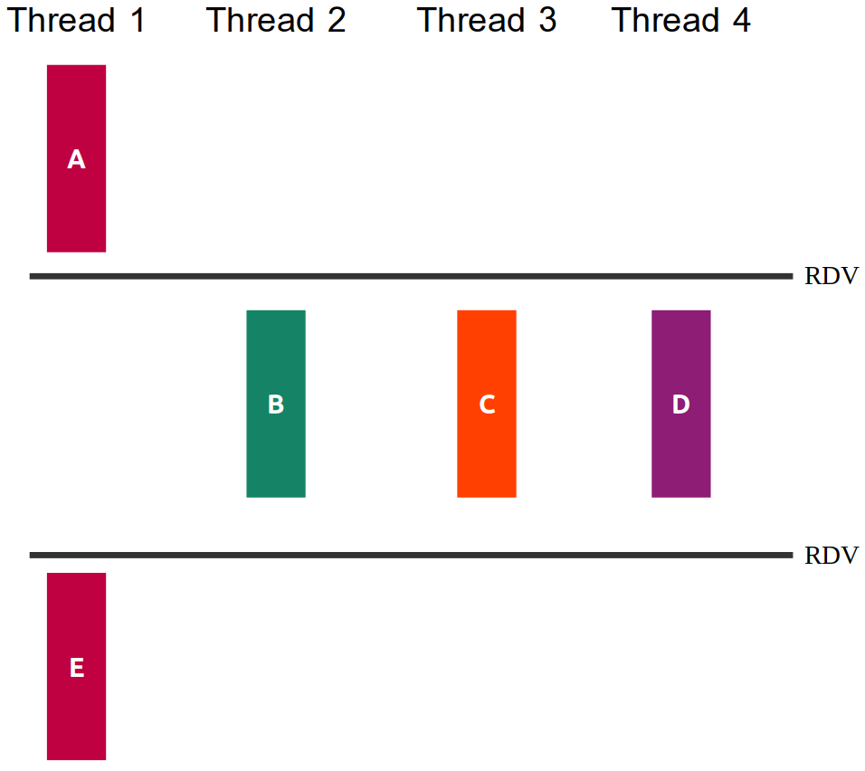

Neste prova iremos avaliar os objetivos de aprendizagem trabalhados na segunda metade do curso. Cada pasta contém os arquivos de uma questão da prova, incluindo arquivos .c para vocês colocarem suas soluções.
É permitido consultar o material da disciplina durante a prova (repositório da disciplina e seu repositório de atividades), além de seus materiais físicos, a calculadora nativa do Ubuntu e os links de sites presentes nas aulas, veja a página de dicas da disciplina https://insper.github.io/SistemasHardwareSoftware/outros/DicasLinks/. Ficam proibidas consultas a materiais de outros alunos ou pesquisas na Internet.
Durante a prova não é permitido consultar outras pessoas, sejam do Insper ou não. Não abra E-mail, Whatsapp, Discord, etc.
A chamada na prova será realizada pela assinatura na lista de prensença. Não saia sem assinar a lista.
Não serão tiradas dúvidas do conteúdo da disciplina durante a prova.
A entrega da sua prova deverá ser feita via Blackboard. Não serão aceitas entregas por outros meios.
As questões da prova serão avaliadas por um corretor automático, um executável disponível na pasta de cada questão (./teste). Esse executável corrige a resposta utilizando uma rubrica incremental, na qual as funcionalidades devem ser implementadas em sequência. Para que uma funcionalidade seja validada, é necessário que todas as anteriores também tenham sido concluídas corretamente. Quanto maior o número de funcionalidades atendidas, maior será a nota.
IMPORTANTE: nessa disciplina fica proibido o uso de de ferramentes de auxílio para geração de código (IA) copilot (se tiver instalado desinstale) e o uso de ferramentas de geração de código automático por IA (por exemplo:ChatGPT), pois é experado que atividade intelectual seja realizada exclusivamente pelo o aluno, o não atendimento dessa restrição implica em nota 0,0 e código de ética.
Faça o download do arquivo zip da pasta e descompacte em alguma pasta no seu computador, não é necessário salvar os arquivos no seu repositório. Ao final rezip a pasta inteira e faça upload no Blackboard.
Caso atenda todas as rubricas da questão, o executável de teste (./teste), terá com saída um PASS com a nota da questão significa que o programa de teste não encontrou problemas em sua solução (não que ela esteja correta!). Depois da entrega será feito um ajuste da nota conforme a nota definida em cada exercício, e também, uma fase de validação extra pelo professor, envolvendo, por exemplo:
Verificar o uso de funções não permitidas, que poderá resultar na anulação da nota no exercício.
Os testes pegam apenas alguns casos, garanta que sua solução funciona conforme o requisitado no enunciado.
Se passou nos testes mas a solução está errado, a nota será desconsiderada.
Tentativas de burlar os testes resultarão em zero na prova.
A figura q1/sincronizacao.png ilustra as relações de dependência entre as partes das funções thread1, thread2, thread3 e thread4, mostrando que algumas delas poderiam ser feitas de maneira concorrente.

Seu trabalho nesta questão será:
criar threads para execução concorrente dos prints das funções. (40% da nota).
usar semáforos para que a ordem e concorrência dos prints das partes das tarefas respeitem o diagrama da figura. (60% da nota).
OBS:
Você não deve introduzir novas dependências ou travar a saída com semafóros de forma seu programa tenha uma única saída, o seu programa deve permitir impressões concorrentes, por exemplo, para figura q1/sincronizacao.png são possíveis, entre outras, as saídas: ABDCDE, ABDCE, ADBCE, ACBDE, ….
Não altere os printf existentes, nem adicione novos.
A nota da questão virá pelos testes automáticos e a análise visual pelo professor será apenas para confirmar que nenhuma regra foi quebrada!
Importante: Caso use variáveis globais na solução da questão a nota será zero (mesmo que passe nos testes).
Como descrubro minha nota?:
Execute o corretor automático do exercício.
./testeAcabaram de lançar uma nova criptomoeda chamada SisCoin! Nela, a transferência de valores é feita utilizando um executável siscoin, cujo código não está disponível.
Para realizar uma transferência, podemos executar no terminal, por exemplo, o comando:
./siscoin abc123 def456 25.1
No exemplo, estamos tentando transferir 25.1 SisCoins da carteira origem abc123 para a carteira de destino def456
Se você não é um entusiasta das criptomoedas, pense nas carteiras como contas bancárias de origem e destino!
O comportamento do retorno (return) do programa ./siscoin é:
Quando o valor de transferência é negativo ou a quantidade de parâmetros está incorreta, ele retorna -1
Quando uma transferência é bem sucedida, ele retorna 0
Quando ocorre uma falha na rede, ele retorna um valor inteiro de 1 a 4 (inclusive)
Ultimamente a rede da SisCoin anda um pouco instável e por muitas vezes as transferências não são realizadas. Se você tentar novamente, pode ser que consiga transferir, mas vamos fazer melhor!
Uma tarefa comum em programação de sistemas é integrar com outros programas instalados.
Seu trabalho nesta questão será desenvolver um programa q2 em C (altere o arquivo q2.c) que recebe três parâmetros pelo terminal: carteira de origem, carteira de destino e valor.
Você deve realizar um fork e chamar o executável ./siscoin repetidamente até que a transferência consiga ser realizada (até que siscoin retorne 0).
Exemplo de chamada do seu programa no padrão ./q2 <origem> <destino> <valor>: ./q2 2uyoh 2hjlkj 19.8
Atenção:
siscoin também tem a chamada no padrão ./siscoin <origem> <destino> <valor>OBS:
Trabalhe no arquivo q2.c e complete as partes faltantes
Compile com gcc -g q2.c -o q2
Deixei um arquivo executável q2_ref que exemplifica o comportamento desejado do programa final. Teste, por exemplo, com ./q2_ref abc1 def2 19.5 e utilize como referência!
O executável siscoin não está realizando nenhuma conexão com a rede! É apenas uma simulação!
O executável siscoin tem comportamento aleatório, então as vezes irá demorar mais para conseguir transferir
Você não precisa se preocupar com os parâmetros das carteiras, pode ser qualquer string! O siscoin valida apenas o 4º parâmetro (valor), além da quantidade de parâmetros
Nesta questão você deverá usar as funções de gerenciamento de processos e chamada de executáveis vistas em aula. Você não pode usar system.
Abra o arquivo q3.c!
Você sabia que o valor de π pode ser aproximado por simulação?! No arquivo q3.c, a função aproxima_pi() busca fazer exatamente isto. Ela sempre guarda o último valor calculado para π em uma variável global chamada pi.
O problema é que o programa roda em laço infinito! Ele nunca para e nunca produz uma resposta.
Sua tarefa neste exercício é:
Exibir o PID do processo (10% da nota)
Alterar o programa para que quando o processo receber um sinal SIGINT (o mesmo enviado quando o usuário aperta CTRL+C no terminal), dar um printf no valor atual da variável global pi e encerrar o processo (60% da nota)
Além do item acima, ao receber SIGINT, salvar o valor atual da variável global pi em formato de texto em um arquivo pi.txt antes de encerrar o processo (30% da nota)
OBS:
Você deve criar uma função para ser o handler do SIGINT
O Handler deve ser registrado na main
Para os arquivos, utilize APENAS as chamadas vistas em aula: open, close, read, write. Não pode utilizar fopen por exemplo
Neste exercício, o programa q4 recebe como argumento da linha de comando uma quantidade máxima de threads executando por vez e o nome de um arquivo. Sua tarefa é fazer uma classificação de palavras em threads que chamam a função classifier_thread.
Exemplo de como seu programa q4 será chamado:
./q2 2 arquivo.txtonde 2 é a quantidade máxima de threads que podem executar ao mesmo tempo e arquivo.txt é o arquivo que contem em cada linhas palavras a serem classificadas/processadas pelas threads.
Exemplo de conteúdo do arquivo.txt:
banana
feliz
chato
parangaricutirimirruaro
harrypotter
arespostaeh42A função classifier_thread retorna na struct de argumentos valores de 0 a 2, inclusive. Estes valores representam a classificação da palavra.
Suas tarefas:
Programar a função char *read_line(int fd). Considere que o arquivo já está aberto. Para ler, é obrigatório utilizar apenas a chamada read. (30% da nota)
Preencher o restante da main para (20% da nota):
Esperar as threads terminarem
Contar a quantidade de palavras em cada classe e exibir mensagem na saída padrão
Fazer alterações na main e na função classifier_thread para que as threads executem respeitando a quantidade máxima de threads (as threads serão criadas, mas na hora de executar, deverão esperar sua vez) (30% da nota).
Programa passa no valgrind sem erros. (20% da nota, apenas se resolveu corretamente)
Atenção:
\n ao final.Exemplo de conteúdo do arquivo.txt (este nome é variável):
mentirasa
audiofone
pulso
mysql
ferias
banana
feliz
chato
parangaricutirimirruaro
harrypotter
arespostaeh42
Exemplo de Saída:
CRIOU THREAD 00 PARA PROCESSAR A PALAVRA mentirasa
CRIOU THREAD 01 PARA PROCESSAR A PALAVRA audiofone
CRIOU THREAD 02 PARA PROCESSAR A PALAVRA pulso
CRIOU THREAD 03 PARA PROCESSAR A PALAVRA mysql
CRIOU THREAD 04 PARA PROCESSAR A PALAVRA ferias
CRIOU THREAD 05 PARA PROCESSAR A PALAVRA banana
CRIOU THREAD 06 PARA PROCESSAR A PALAVRA feliz
CRIOU THREAD 07 PARA PROCESSAR A PALAVRA chato
CRIOU THREAD 08 PARA PROCESSAR A PALAVRA parangaricutirimirruaro
CRIOU THREAD 09 PARA PROCESSAR A PALAVRA harrypotter
CRIOU THREAD 10 PARA PROCESSAR A PALAVRA arespostaeh42
THREAD 00 TERMINOU COM O RESULTADO 2
THREAD 01 TERMINOU COM O RESULTADO 1
THREAD 02 TERMINOU COM O RESULTADO 0
THREAD 03 TERMINOU COM O RESULTADO 0
THREAD 04 TERMINOU COM O RESULTADO 2
THREAD 05 TERMINOU COM O RESULTADO 1
THREAD 06 TERMINOU COM O RESULTADO 2
THREAD 07 TERMINOU COM O RESULTADO 0
THREAD 08 TERMINOU COM O RESULTADO 0
THREAD 09 TERMINOU COM O RESULTADO 0
THREAD 10 TERMINOU COM O RESULTADO 2
RESULTADO:
TOTAL CLASSE 0: 5
TOTAL CLASSE 1: 2
TOTAL CLASSE 2: 4
OBS:
Trabalhe no arquivo q4.c e complete as partes faltantes
Compile com gcc -g q4.c -o q4 -pthread
Faça seus próprios arquivos de teste personalizados!